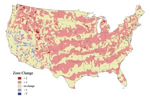

Political scientists talk about the United States as a closely fought battle between red and blue. While the battle is undecided politically speaking, from a climatologist’s perspective, the red is clearly winning. And to gardeners, this means big changes.
The map below, from The Arbor Day Foundation, shows changes in U.S. Hardiness Zones over the past 16 years. While there are pockets of bluish gardeners who have seen their zones shift to cooler temperatures, the majority of the country has seen its zones move into the red because of warmer temperatures.
Although these changes are significant, it’s a simplification to talk about them strictly in terms of warming. Garden writer Anne Raver of The New York Times was the first to label the trend what it really is: “global weirding.” Nearly all parts of the country have been experiencing strange and often extreme conditions, be they hot, cold, wet or dry.
Opportunistic gardeners may be tempted to fantasize about what a few extra degrees of warmth will do for their melons or grape vines. Deep down, however, they know that climate change is not simply about a few extra vineyards here and a few less sugar maple groves there. It’s about giving Mother Nature the “mother of all makeovers,” the results of which no one can accurately predict.
What’s clear is that it will take a coordinated group effort to reduce and offset global warming activities. Farmers around the world, and those who grow their own food, will need to expand their expertise as they endure more extreme weather. To learn more about your zone, visit the Arbor Day Web site.
|
 ARBOR DAY FOUNDATION Hardiness zones are based on average minimum annual temperatures. Over the past 16 years, most zones have shifted northward as average temperatures have warmed. |
|
|